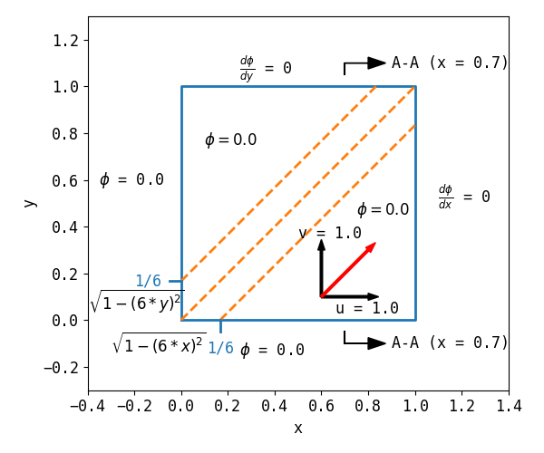

2.4.6. Semi Ellipse¶
2.4.6.1. Problem Description¶
The domain is a unit square \(x \in [0.0, 1.0], y \in [0.0, 1.0]\). The boudary conditions are
\[\begin{split}\phi = \sqrt{ 1 - (6y)^2} &, \quad \text{if} \quad x = 0.0 \quad \text{and} \quad y = [0.0, 1/6]\\
\frac{d \phi}{d x} = 0 &, \quad \text{if} \quad x = 1.0\\
\phi = \sqrt{ 1 - (6x)^2} &, \quad \text{if} \quad y = 0.0 \quad \text{and} \quad x = [0.0, 1/6]\\
\frac{d \phi}{d y} = 0 &, \quad \text{if} \quad y = 1.0\\\end{split}\]
The velocity is \(\mathbf{u}=(1, 1)\).

Fig. 2.61 Illustration of the problem.¶
The semi-ellipse profile will be on the center of the domain.
2.4.6.2. Results¶
2.4.6.3. Case Information¶
Run time infomation:
Functions |
Wall Time (s) |
|---|---|
dt_cmake |
1.94611e+00 |
dt_make |
8.09404e+00 |
dt_run |
1.59104e+01 |
dt_plot |
2.02767e+00 |
File |
Creat Time |
Modified Time |
|---|---|---|
main.cpp |
20-01-04 18:31 |
20-01-04 18:31 |
CMakeLists.txt |
20-01-04 17:51 |
20-01-04 17:34 |
plot.py |
20-01-04 18:40 |
20-01-04 18:40 |
run.py |
20-01-04 17:53 |
20-01-04 17:53 |
report.rst |
20-01-04 18:51 |
20-01-04 18:51 |